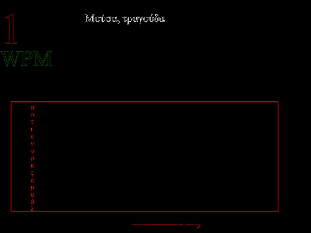
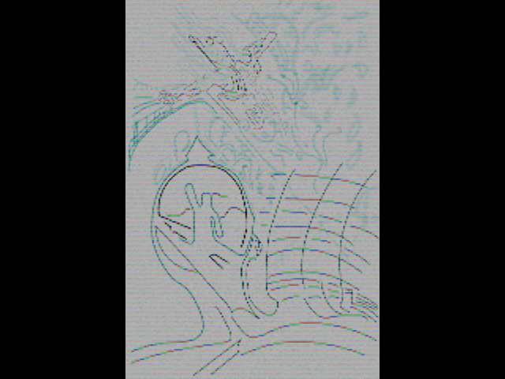

The Brave Future of Text
‐ Participate to a paradigm in it's infancy

Battle through famous works such as Wuthering Heights by Emily Brontë, the Ιλιάδα by Homer or if you're that courageus the notorious 道德經 by Laozi.
Four unique weapons in the fight against illiteracy
I: The Treeboard
The trendy treeboard can be operated with only one hand. It's highly advanced layout is based upon the advanced mathematics of Huffman tree's. Leveraging state of the art computer science to allow for 60-80% of keys statistically to be outputed with only tree keypresses. This while only using 5 keys!
→ GoII: The Keyboard
For the more traditionally inclined, a standard onscreen replica is supported. The hardned nerd will know where all the keys are on this one, but is he really faster when tasked with writing in different languages?
→ GoIII: The Quadboard
Whereas the more fashinable and daring would of course take the speedy quadboard. Once the top 20 % used symbols are learned typing with this board becomes a breeze.
→ GoIV: The Linear
For the true maschocist, with proper timings the expert can sustain proper timings. However when it's dynamic lookup mode is unlock it might stand a fighting chance!
→ GoThe Holy Trinity
 Wuthering heights - the game is a combination of the elements in the holy trinity.I: Art
To widen the space of possibilities when progressing into the techonological and reasearch parts of the project. The role of the artist is to exclude himself from the paths more often trodden and from this seclusion invent new peaceful nonnormative norm to become tied and truth.
II: Science
Statistics of essence, the idea here is to demonstrate whether this is at all possible or not. To find the truth is the vision and we need to remain clear on what it means toachieve it and to what extent we can underline it. To come up with a failed idea is not a failure but rather proof of something that is not a truth, in itself a truth.
III: Technique
The actual art of implementing the code